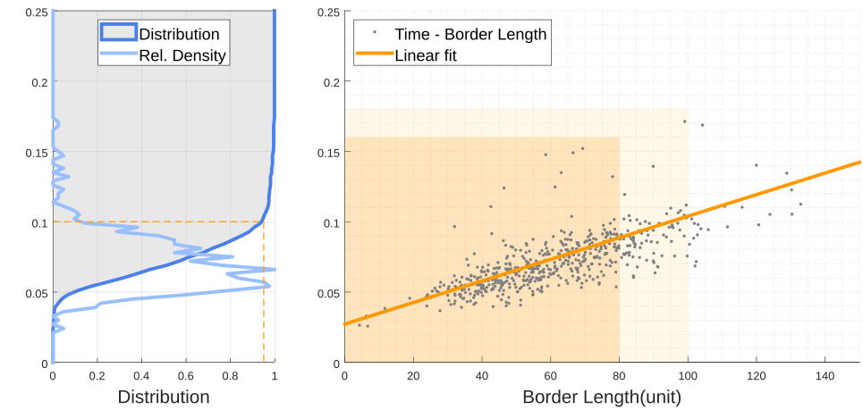

Trajectory Initialization
Our algorithm is capable of rapid reachability checking and trajectory initialization. In the video below we show the process of the algorithm.
Legged robots today face significant challenges when navigating complex environments, requiring precise real-time decisions for foothold selection and foot trajectory planning. While various planners have been developed for swing trajectory planning, many are either too time-consuming or overly simplified for handling intricate environments.
This paper introduces FLTPlanner, a novel approach for real-time foothold reachability analysis and trajectory generation. For each swing-trajectory planning task, we first assess foothold reachability using a predefined feasible domain and grid map. We then initialize a heuristic trajectory that is close to feasible solutions. This initial trajectory undergoes MINCO trajectory optimization, incorporating collision and limit constraints, to achieve the optimal path while avoiding local minima. We validated FLTPlanner on the Elspider4 Air robot, both in simulations and real-world tests. The robot consistently outperformed other planners in complex terrains and confined spaces.
Our algorithm is capable of rapid reachability checking and trajectory initialization. In the video below we show the process of the algorithm.
We formulate optimal control problem and solve it using MINCO-LBFGS framework. Foot and knee collision is considered in the video below.
We test our algorithm in generated scenarios to assess the performance of reachability check and trajectory initialization. The 60×60 grid map is generated by fractal noise and the feasible corridor with length 2 is randomly generated using the QuickHull algorithm. We record the border length and consumed time including reachability check and trajectory initialization for 1000 reachable cases and plot it below. Exponential fitting is applied to the collected data.
Random corridor generation

Comparing to other methods like MINCO-LBFGS, RRT-Connect and STOMP, the proposed method outperforms not only in terms of time consumption but also in terms of trajectory quality.
We have conducted an experiment asking Elspider4 Air to climb across a 19cm × 12cm barrier (about 60% leg length) to illustrate FLTPlanner's ability of obstacle conquering and collision avoidance. Robot states are planned by MCTS planner with human instructions, and the swing trajectories are generated by FLTPlanner with PITD (Pose Interpolation Task Domain). The video is accelerated by 2x.
FLTPlanner is also able to handle more complex scenarios like crossing a U-shaped clamped barrier. The video below shows the process of the robot crossing the U-shaped clamped barrier. The video is accelerated by 2x.
The video below shows Elspider4 Air climbing across timber piles with timber size of 20cm × 20cm × 10/20/30/40cm. The gridmap is predefined because of real-time elevation mapping inaccuracy. The video is accelerated by 2x.
Elspider4 Air is also able to climb up and down stairs, as is shown in the video below. The video is accelerated by 4x.